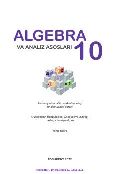

1A10-sinflar uchun algebra va analiz asoslari fanidan davlat ta'lim standartiga mos darslik.
Mazkur darslik umumiy o'rta ta'lim maktablarining 10-sinfi uchun mo'ljallangan bo'lib, algebra va analiz asoslari fanini chuqur o'rgatishga qaratilgan. Kitobda elementar funksiyalar, ratsional va irratsional tenglamalar, ko'rsatkichli va logarifmik funksiyalar, trigonometriya hamda ehtimollar nazariyasi mavzulari yoritilgan.